Ensimmäisen vuoden jälkiviisastelut
"More people have lost money waiting for corrections and anticipating corrections than in the actual corrections." – Peter Lynch
Jälleen on se aika, kun pitäisi tarkastella mennyttä ja tähyillä tulevaan. Sinällään triviaalia gregoriaanisen kalenterin mukaan määräytyvää elämän tahdittamista, mutta koska sen mukaan tämä kvartaalitaloutemme sykkii, niin leikitään mukana.
Melkoinen kalenterivuosi tästäkin jälleen saatiin aikaan. Varsinainen kurssien ja tunteiden vuoristorata. Lopputuloksena poikkeuksellisen hyvä sijoitusvuosi. Rapakon takana S&P500 nousi ~29%. Osingot mukaan ja kokonaistuotoksi muodostui 31%.
Pohjustus hyvälle nousulle oli kuitenkin jo tehty edellisenä vuonna 2018, kun indeksi oli laskenut viimeisellä kvartaalilla 15%. S&P500 on 10% ylempänä kuin 2018 huiput.
Kuinkakohan moni sijoittaja mahtoi 30% vuosituoton saavuttaa? Vuotta kun värittivät makrohuolet, kauppasota, Brexit, Hong Kongin levottomuudet ja Kiinan hidastumisen epävarmuus, ja sen siivittelemä hermoilu markkinoilla.
Parhaaseen lopputulokseen olisi päässyt, jos pitäytyi sijoitussuunnitelmassaan ja lisäsi tänäkin vuonna osakesäästöjään tasaisesti. Huonoimpaan pääsi, jos antoi median pelottelun tai Trumpin twiittien vaikuttaa myyntipäätökseen esim. vuosi sitten joulu-tammikuussa.
Vuosi 2019 oli malliesimerkki siitä, kuinka markkinoita ei vähempää voisi kiinnostaa sijoittajan mielipide siitä, mitä pitäisi tapahtua. Markkinoita ei kiinnosta onko takana historiallisen pitkä talouden elpymisen kausi, tai historiallisen pitkä nousumarkkina.
Jos mietitään pitkän aikavälin nousu- ja laskumarkkinoita, nykyinen nousu olisikin kestänyt vain seitsemän vuotta. Matka olisi vasta alkanut, jos sitä vertaa 1954-1968 tai 1980-2000 sekulaarisiin markkinoihin.
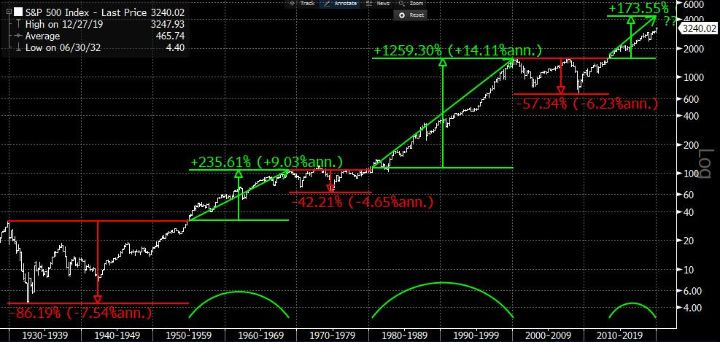
Jos katsotaankin bull- ja bear-markkinoiden tarkoittavan vähintään 20% nousuja ja laskuja, niin tuolloin nykyinen nousu olisi vain vuoden mittainen. Ei järin pitkä. Itse asiassa closing-hinnoista tuo 2018-lopun drawdown oli 19.8%, joten se ei täyttäisi bear-markkinan määritelmää. Kuka sanoo, bull- tai bear-markkinan määritelmän pitäisi täyttyä juuri 20%:ssa? Nyt ei kuitenkaan puhuta mistään luonnon laeista, kuten veden kiehumis- tai jäätymispisteestä. Sitten vuoden 2009 pohjien on nähty myös pari 15%+ ja useita 10% laskuja.
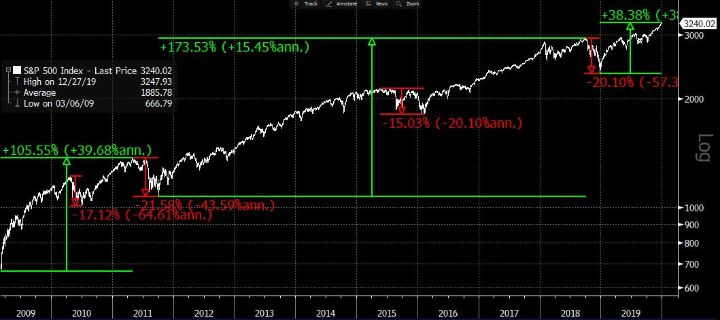
Se on totta, että nykyinen talouskasvun kausi on pisin ainakin sataan vuoteen – ainakin, jos tarkastellaan edelleen USA:n taloutta. Kuten seuraavasta kuvasta kuitenkin nähdään, ovat talouskasvun kestot pidentyneet mitä lähemmäksi nykyhetkeä tullaan. Talous ei ole enää yhtä syklinen, kuten aikaisemmin, jolloin savupiippuyhtiöt toimivat talouden vetureina. Nykyisin niidenkin varastonhallinta ja globaalit logistiikkaketjut ovat tehostuneet. Nykyisin kasvun vetureina toimivat aineettomia hyödykkeitä, kuten digitaalisia palveluja tuottavat yhtiöt, jotka eivät samalla tapaa joudu sitomaan pääomiaan kuten savupiippuyhtiöt.
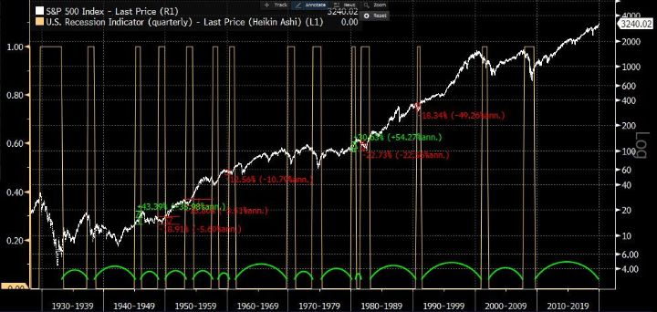
Lisäksi, kuten kuva osoittaa, ei jälleen ole mihinkään markkinoiden kymmeneen käskyyn kirjoitettu, että niiden pitäisi romahtaa talouden jossain vaiheessa taipuvan taantumaan. Päinvastoin, joskus osakemarkkinat ovat jopa nousseet taantumassa. Ja läheskään aina, taantuman kanssa samaan aikaan ajoittuva lasku ei ole ollut edes reilusti yli 20%.
Laskumarkkinoita saadaan talouden noustessakin, kuten vuosi sitten nähtiin. Ne vaan kuuluvat homman nimeen. Ja se onkin ainoa markkinoiden sääntö: välillä osakkeet laskevat. Pitkässä juoksussa ne ovat kuitenkin aina lopulta nousseet.
Kaikista huolista riippumatta siis, markkinat voivat nousta. Sanotaankin, että nousumarkkinassa osakkeet kiipeävät ”huolimuurin” yli. Ne voivat myös laskea, kuten vuosi sitten nähtiin. Siksi pitkäaikaisen osakesäästäjän ei kannata liikoja seurata yleistä uutisointia, vaan sen sijaan keskittyä omassa suunnitelmassa pysymiseen. Mikään ei ole yksittäisen mustavalkoista ja siksi mekin pyrimme varautumaan eri vaihtoehtoihin.
Vuoden 2019 sijoitustuotto tyydyttävät 47%
Kuukausi, kvartaali tai vuosikin on vain ohitse kiitävä hetki ajassa. On hyvä muistaa, että oman tai ulkopuolisen sijoittajan strategian ja pätevyyden arvioiminen niin lyhyen aikasarjan perusteella ei ole hedelmällisintä. Siinä voi harhautua luulemaan signaaliksi sellaista, joka onkin vain melua.
Pelkän tuoton perusteella suurempien johtopäätöksien tekemisen kanssa pitää olla varovainen. Riskinä on, että päätyy juoksemaan tuoton perässä ja siinä käy yleensä huonosti. Sen sijaan sijoitusstrategian ja -prosessin, sekä itse tiimin pätevyyden arvioiminen yli ajan on tärkeää.
Siitä huolimatta seuraavassa meidän vuodestamme 2019. Jotka ovat meidän kirjoituksiamme seuranneet tietävät, miten ajatuksemme kulku suurin piirtein meni.
Teesejämme läpi vuoden olivat:
- Negatiiviset korot eivät ole kestävällä tasolla.
- Inflaation piristymisen mahdollisuudesta ei juuri puhuta.
- Arvo-osakkeet suhteessa kasvuun tai ”defensiivisiin” osakkeisiin on poikkeuksellisen houkuttelevia.
- Kehittyvät markkinat ovat houkuttelevia suhteessa kehittyneisiin markkinoihin parempien kasvunäkymien ja demografisten rakenteiden, sekä osakemarkkinoiden suhteellisen edukkuuden vuoksi.
Vuoden voisi jakaa kahteen osaan:
- Tammi-elokuu, jolloin edellä mainitut teemat eivät juuri toimineet.
- Syys-joulukuu, jolloin ne alkoivat jokseenkin toimimaan.
Ensimmäisellä periodilla olimme markkinasta liian varovaisia. Jälkimmäisellä periodilla emme olleet tarpeeksi aggressiivisia. Yleinen varovaisuus. Siihen voisi kiteyttää vuotemme. Se heijastui pidempien sijoituksien alhaisempana osuutena tuotoista.
Kokonaistuotto jakaantui suurin piirtein seuraavasti:
- Pidempiaikaiset sijoitukset 20%
- Erikoistilanteet 30%
- Treidaus 50%
Vuosi oli yrityksemme ensimmäinen ja olimme päättäneet aloittaa kevyesti ja siksi pikkuhiljaa alkuvuodesta nostimme riskipainoja. Päätimme jo kättelyssä, että huomioiden talouden syklin ja yleiset arvostustasot, olisi ”all in” meille joka tapauksessakin max 50% osakepaino.
Alkuvuoden nopea kurssinousu ja sentimentin paraneminen loppuvuoden 2018 pohjista jättivät meidät osittain jalkoihinsa. Samoin laskevat korot rokottivat bondishortteja ja pankkilongeja. Treidaus, erikoistilanteet ja yksittäiset onnistumiset pidemmissä sijoituksissa toivat tuotot.
Näiden taisteluiden tuska kulminoitui elokuuhun, jolloin yleinen sentimentti vaikutti erittäin negatiiviselta kauppasodan ja talouden kehityksen suhteen. Tuolloin totesimme, että mielestämme näkymät eivät niin huonoilta näyttäneet.
Olimme jokseenkin vakuuttuneita, että viimeistään loka-marraskuulle tultaessa talouden vertailuluvut edellisvuoteen nähden alkaisivat näyttää jo paremmalta. Päätimme lisätä kaikkiin olemassa olleisiin positioihin.
Syyskuun alussa kuminauha oli tarpeeksi kireällä ja alkoi vastaliike. Jokainen positio alkoi toimimaan ja syyskuu oli erittäin hyvä kuukausi meille. Korot ja etenkin arvoyhtiöt kuten sykliset (esim. pankit) nousivat. Jopa shorttipuoli toimi, kun low vol-osakkeet eivät nousseet tai jopa laskivat.
Missä homma meni sijoitusprosessimme kannalta vihkoon, oli ettemme lisänneet vielä lisää, kun tuuli vihdoin alkoi kunnolla puhaltamaan purjeisiimme.
Se oli osaltaan tietoinen valinta. Nimittäin Q4:lle tultaessa, loka-marraskuun vaihteessa aloimme jo tähyilemään syyslomia ja pitkään odotettua Kalifornian roadtrippiä. Vuotuinen 40% tuottotavoite oli saavutettu ja halusimme nauttia lomasta ilman suurempia markkinariskejä. Pienensimme positioitamme merkittävästi.
Teimme näin, koska voimme. Vastaamme, ainakin vielä toistaiseksi, pelkästään itsellemme. Emme hallinnoi ulkopuolisia varoja. Pääomat, joita hoidamme, ovat omia, ja koska omat henkilökohtaiset tulomme perustuvat näiden pääomien kasvamiseen (eivätkä joka kuukausi tilille kolahtavaan palkkaan), emme halunneet käyttää lomaa positioiden murehtimiseen.
Jos hoitaisimme ulkopuolisia varoja, olisi tilanne tietenkin ollut eri. Emme olisi laittaneet lappua kuukaudeksi luukulle ja lähteneet porukalla perhelomalle tuijottamaan Tyynen valtameren horisonttiin.
Nyt kuitenkin, näin peruutuspeiliin katsoessa, on helppo todeta, että luotto omaan näkemykseen olisi voinut olla vahvempi ja antaa positioiden tehdä töitä puolestamme. Tuolloin ei olisi tarvinnut tulla takaisin töihin ja jäädä vuoden vaihteen nousun jalkoihin FOMO-ahdistusten pikkuhiljaa hiipiessä takaraivoon. Siltikään, turhaan asiasta on painetta ottaa, sillä kuten sanottua, kyseessä oli myös tietoinen päätös.
Jäimme osaltamme kvartaalitalouden höynäyttämiksi. Jos on ollut hyvä vuosi, aletaan lopussa varmistelemaan ja himmailemaan. Jos taas on ollut huono vuosi, yritetään lopussa vielä kiriä kenties normaalista prosessista poikkeavalla liiallisella riskillä. Ja kun vuosi vaihtuu, aloitetaan ”puhtaalta pöydältä”.
Haluaisitko, että salkunhoitajasi tekee niin? Muuttaa käyttäytymistään ja salkun painotuksia jonkin triviaalin ohitse kiitävän ajankohdan vuoksi, sen sijaan, että pitäisi huolen siitä, että salkku olisi jokaisena hetkenä optimaalinen sijoitusstrategiaan nähden. Niin kuitenkin salkunhoitaja on kannustettu toimimaan, sillä hänen kompensaationsa on rakennettu niin (pätee moniin aloihin ja työtehtäviin).
Siksi vuositavoitteiden asettaminen on hieman hölmöä. Onnistuminen (ja palkitseminen) pitäisi löytää prosessin onnistumisesta, ei vuositavoitteiden saavuttamisesta. Lopputulokseen kun vaikuttavat monet satunnaisuudetkin. Prosessi > tavoitteet.
Koko vuoden sijoitustoiminnan tuotoksi muodostui kuitenkin varsin tyydyttävät 47% operatiivisten kulujen jälkeen. Tuottoon ei voi olla täysin tyytyväinen, edellä mainittujen syiden takia. Ei voi kuitenkaan liian ankara olla itselleen. Valitsimme tällä kertaa helpomman tien kuljettavaksemme.
Vuonna 2019 hyvää sijoitustoiminnassamme oli:
- Saimme uuden operaatiomme prosessit varsin hyvään asentoon. Nollasta kyhätyt infra, strategia ja prosessit.
- Vuoden synkimmässä hetkessä elokuussa jälkikäteen oikeaksi osoittautunut päätös luottaa näkemykseen ja lisätä riskiä.
- Useampia hyviä treidejä, erikoistilanteita ja pidempiäkin sijoituksia.
- Ei merkittäviä yksittäisiä tappioita.
Parannettavaa sijoitustoiminnassa:
- Prosessissa on kuitenkin vielä paljon parannettavaa.
- Näkemys pitäisi pystyä muodostamaan paremmin positioksi, josta puristaa kaikki mahdollinen irti (lisäys + exit-strategiat).
- Edelleen yksittäiset näkemykselliset osakesijoitukset jäivät varsin vaatimattomiksi. Tuotot kertyivät merkittävältä osin pienemmistä puroista.
Kommentteja osakesijoituksista Q4:llä
- ·Kehittyvät markkinat: Venäjän RSX jatkoi hyvää nousuaan Q4:llä. Venäjän paino salkusta on noin 6%. Vastaavalla painolla löytyy kehittyvien markkinoiden osinkoja ja omien osakkeiden takaisinostoon keskittyvää EYLD-etf:ää. Uutena kehittyvien markkinoiden sijoituksena mukaan on tullut Vietnam, tosin pienemmällä painolla. Vietnam on ollut kauppasodan yksi hyötyjistä tuotannon siirtyessä Kiinasta sinne. EM-salkunhoitajat ovat Venäjää ylipainossa, joten kenties arvioimme omistuksemme uudelleen.
- Eurooppa: olemme lisänneet Euroopan painoa ja omistamme myös edelleen Euroalueen pankkeja.
- Paras yksittäinen suora osakesijoitus oli Kamux. Osakkeesta kirjoitimmekin edellisessä katsauksessamme, ja ennakoimamme hyvin vahva kolmas vuosineljännes toteutui. Osake oli salkun suurin yksittäinen osake, kun osake nousi nopeasti 40 %. Omistamme edelleen osaketta, mutta vain 2% painolla. Yhtiö on mielenkiintoinen, mutta pääomistajien osakemyynnit voivat pitää osakekurssia aisoissa.
- Muut edellisessä kvartaalikatsauksessa mainitut Swedish Match, Nobina sekä pelifirmat MTG ja Activision Blizzard menivät hyvin. Näistä omistamme edelleen Swedish Matchia noin 3% painolla. Zynin USA:n potentiaali ja sen tuoma tulosvipu sekä suhteellisesti parantunut kilpailuasema Ruotsissa pitävät kasvunäkymät hyvinä. Activision jäi hieman puolitiehen, sillä hyppäsimme liian aikaisin pois. Osake näyttää momentum-mielessä vasta keräävän vauhtia (kuten myös verrokit mm. TTWO ja EA). Voi olla, että palaamme pelifirmoihin vielä lähiaikoina. MTG:ssä näkemyksemme osiensa summa laskelman alennuksesta purkautui kertaheitolla, kun johto kertoi harkitsevansa yhtiön pilkkomista ja muita omistajille myönteisiä uudistuksia.
- Loppukeväästä asti omistamamme norjalaisesta Data Responsista tuli loppuvuodesta ostotarjous. Omistukselle tuotto 50%+. Harmi, että hieman liian pieni positio, jotta tuntuisi kunnolla.
- Lohiteesi (short Salmar ja Mowi) ei toiminut lohen hinnan käännyttyä nousuun. Pehmeähköistä Q3-tuloksista huolimatta, osakkeet nousivat ja suljimme shortit pienellä tappiolla. Ajoimme myös pariin tulosvaroitusmiinaan: Raysearch ja Electrolux. Molemmat olivat kuitenkin sen verran pieniä (1% ja 2%) positioita, ettei harmia juuri aiheutunut.
- Olemme olleet shorttina Elisaa ja Orionia jo jonkin aikaa valuaatiopohjalta. Koska pelkästään valuaatio ei ole paras mahdollinen syy olla shorttina (katalysti puuttuu) ovat positiot vain 2-3% luokkaa.
- Onnistunut keikautus oli Spotify, jossa olimme mukana Q3-tuloksen yli USD120 à 150+. Siinä sentimentti ja odotukset Q3-tulokseen näyttivät suotuisilta riskituotto-mielessä osakkeen tultua rajusti alas. Isommassa kuvassa sijoituscase on kimurantti. Yhtäältä bruttomarginaalin nostopotentiaali näyttää haastavalta yhtiön ollessa levy-yhtiöiden puristuksissa. Samalla haastajat Amazon ja Apple panostavat omiin tuotteisiinsa. Toisaalta Spotifyn tuote on erinomainen ja saa uusia asiakkaita. Podcastit ja oma tuotanto voi tuoda toivottua nostetta bruttomarginaaleihin. Miksi yhtiö ei olisi myös yritysostokohde. Lynchin periaatteella pitäisi omistaa sitä, jonka tuotetta käytät. Kymmenen vuotta maksavana ja tyytyväisenä asiakkaana pitäisi siis omistaa osaketta…?
- Omistamme edelleen alkuvuonna ostettua Googlea. Osake on ATH-tasoilla eikä kurssikäppyrän perusteella ole syytä lähteä myymään. Muutoinkaan tarinassa ei juurikaan muutoksia ole tapahtunut, vaikkakin perustajat Larry Page ja Sergey Brin ilmoittavatkin astuvansa sivuun ja siirtävänsä vetovastuun nykyiselle CEO:lle Sundar Pichaille. Yhtiö kasvaa edelleen 15%+ ja tekee vapaata kassavirtaa vuosittain noin USD30bn senkin jälkeen, kun ovat käyttäneet innovointiin ja muuhun kasvupanostuksiin 25bn+. Vuosi 2020 (tai tulevat vuodet) voi tuoda tullessaan regulatoristen riskien realisoitumisen, kuten esim. yhtiön pakotetun pilkkomisen. Voi kuitenkin argumentoida, että Googleen ja muihin ”fangeihin” on jonkin asteinen monialayhtiön diskontto hinnoiteltu sisään, ja että niiden osien summa voisi olla itse asiassa isompi kuin nykyiset markkina-arvot.
- Vastaava riski on Amazonilla, joka on tuoreimpia ostoksia. Osake on konsolidoinut USD1500-2000 välissä nyt pari vuotta. Toisin kuin yleisindeksit, Amazon ei ole uusissa huipuissaan. Jos indeksien nousu olisi jatkuvan, jossain vaiheessa se tarvitsee Amazonin kaltaisen (Googlen kokoisen) lähes biljoonan dollarin markkina-arvon yhtiön mukaan tulemista. Amazon on yksi maailman innovatiivisimmista yhtiöistä, joka kasvaa ~20% ja tekee AWS:n ja mainostulojen avittamana 40bn+ operatiivista kassavirtaa vuodessa. Osake tuli salkkuun USD1800 alta. Jos se läpäisee 2000, tulemme ostamaan sitä lisää.
Iso kuva 2020?
Kuten Howard Marks sanoo, koska emme voi tietää tulevaisuutta, tulee meidän pyrkiä tunnistamaan nykyinen markkinan tilanne ja tekemään siitä arvio, millainen riskituotto kullakin hetkellä on.
Tunnelma ei ole läheskään yhtä pelokas, kuin se oli loppukesästä. Etenkin teknologiayhtiöiden joukosta alkaa löytyä jo varsin korkeita arvostustasoja. Jos viime vuonna meillä oli vaikeuksia löytää näkemyksellisiä osakesijoituksia, ei se tällä hetkellä ainakaan helpommalta näytä.
Kauppasodan lieventyminen ja Brexitin eteneminen, ja kenties se, ettei talouskasvulta ja osakkeilta pudonnutkaan pohja pois, sai sijoittajat loppuvuodesta ostamaan sankoin joukoin osakkeita. BofA/ML:n tekemän kyselyn mukaan jo marraskuussa salkunhoitajien käteistasot laskivat alimmilleen sitten maaliskuun 2013. Joulukuussa taso oli säilynyt samana, mutta allokaatiot osakkeisiin oli hypännyt 10%:llä siten, että nyt 31% vastanneista salkunhoitajista kertoi olevansa ylipainossa osakkeista, korkein määrä vuoteen. Taso on kuitenkin vasta vain hieman yli pidemmän keskiarvon.
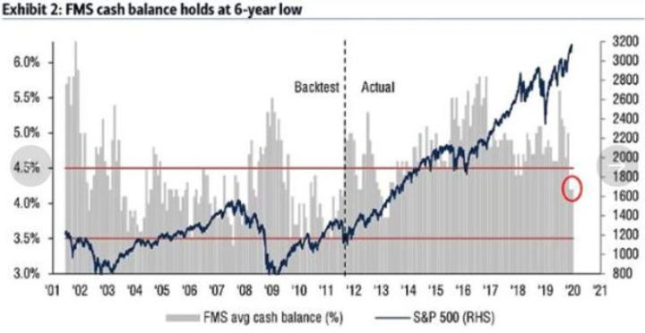
Sentimentti on muuttunut selvästi vielä loppukesän/alkusyksyn tilanteesta. Samaisesta joulukuun kyselystä ilmenee, että ensimmäistä kertaa sitten elokuun 2018 sijoittajat odottavat yhtiöiden tuloksien parantuvan seuraavien 12kk aikana. Vasta kuukausi pari sitten juuri kukaan ei odottanut globaalin talouden elpyvän. Nyt 29% vastanneista odottaa parantumista. Samoin yhä useampi (43%) vastanneista odottaa inflaation kiihtyvän tulevina 12kk aikana.
Viime vuonna nousu perustui niin USA:ssa kuin Euroopassakin arvostuskertoimien kasvuun. Jatkossa indeksien lisänousun voisi kuvitella vaativan tuloskasvua. Sitä puoltaa edelleen maailman talouskasvu, jolta ei pudonnutkaan pohja pois. Kasvun kulmakerroin on osoittanut alaspäin. Jos tuo kulmakerroin edes jokseenkin stabiloituisi, on yhtiöiden tuloskasvulle varsin hyvä potentiaali.
Nopean kurssi- ja arvostustasojen nousun myötä ovat sijoittajat kuitenkin päässeet nauttimaan etupainotteisesti tulevaisuuden hedelmistä. Euroopassa indeksitasolla reilun 6% tulostuotto olisi varsin siedettävä, etenkin jos sitä vertaa vaihtoehtoiseen nolla- tai miinusvaihtoehtoon. Sitä korkeampi vuosituotto olisi positiivinen yllätys.
- Geopolitiikka. Hyvä kun uusi vuosi ehti edes käynnistyä, kun tästä saatiin jo ensimakua. Trumpille sulka hattuun Iran-konfliktin hoidosta. Kauppasota Kiinan kanssa voi eskaloitua.
- Osakkeiden arvostustasot ovat korkealla. Varsinkin Yhdysvalloissa kaikki tähdet ovat olleet sijoittajille suotuisissa asennoissa. Ennätyskorkeat tulosmarginaalit, alhaiset verot ja ennätysalhaiset korot ovat tukeneet osakkeita, mutta niiden suunta voi ennen pitkää kääntyä.
- Joukkovelkakirjojen karkean yliarvostuksen purkaantuminen. Jos inflaatio herää henkiin, voivat korot nousta vaikuttaen kaikkien omaisuuslajien arvoon. Seuraukset voivat olla arvaamattomia, mutta se voi myös tukea osakkeita, etenkin arvo-osakkeita.
- Taantuma. Yleensä taantuma on vaatinut, että yhtiöiden lainahanat ovat sulkeutuneet. Mistään luottokriisistä ei ole merkkejä, sillä toistaiseksi yhtiöistä ne heikoimmatkin saavat suhteellisen edullisesti rahoitusta. Tilanne voi muuttua.
- USA:n presidentinvaalit. Warrenin tai Sandersin todennäköisyyksien tulla valituksi seuraavaksi presidentiksi voi alkaa keväästä eteenpäin alkaa heiluttaa markkinoita.
- Tuntemattomat tuntemattomat. Lisäksi tietenkin on määrittelemätön määrä riskejä, joita emme edes osaa kuvitella olevan.
This time is different?
Täytyykö nykyisen nousukauden päättyä jotenkin eri lailla kuin niin monien historiassa? Kun musiikki lakkaa, koittaako jonkinlainen vääjäämätön kriisi?
Onko niin, että edellinen suuri kriisi, globaali finanssikriisi, on ihmisillä edelleen yli kymmenen vuotta myöhemmin niin tuoreena mielessä, että äskeisyysharhan harhauttamina kuvittelemme myös seuraavaksi ajautuvamme vastaavaan?
Toki rahapolitiikka on pitänyt huolen siitä, että rahaa on markkinoilla jopa liiaksi. Se lienee päällimmäisin syy ihmisten mielissä olevaan epäluuloon – että pelin säännöt olisi muutettu tavalla, joka ei kannusta pelaamaan kuten ennen.
Velkaa onkin maailmassa niin paljon, että jossain vaiheessa sen määrä alkaa rajoittaa talouskasvua. Toisaalta keskuspankit ovat myös varmistaneet, että lainanhoitomaksut ovat alhaisia. Silti investointeihin lähtöä karsastetaan. Investoinneilla voitaisiin kuitenkin saada aikaiseksi inflaatiota, joka voisi olla se pelastuksen tie ulos velkataakasta.
Keskuspankit ovat tehneet voitavansa. Vihdoin Euroopan poliittiset päättäjätkin ovat vetäneet päätänsä pois austerity-pensaasta ja hieman lämmenneet fiskaalipuolen ajatukselle. Niin väistynyt Draghi kuin myös Lagarde ovatkin patistelleet päättäjiä toimiin. Mitä jos vihdoin saadaan lisäviitteitä sellaisesta?
Voisiko olla niin, saisimmekin investointien (tai edes niiden odotusten) ajamana inflaatio- ja korko-odotuksia ylös? Tuolloin pääsisimme ”normaalimpaan” tilaan, jolloin kenties myös yritykset uskaltaisiavat investoida.
Samaan aikaan kapasiteettirajoitteet ovat perinteisesti nostaneet raaka-aineiden ja työvoiman hintaa. Jo nyt OECD-maiden työttömyys on alimmillaan mitä se on ollut ainakin 2000-luvun.
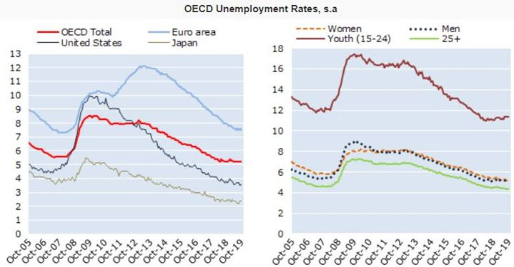
Tällainen tilanne on perinteisesti nähty normaalin taloussyklin loppupuolella, kenties pari-kolme vuotta ennen syklin huippua. Entä jos elämmekin tuollaisen jokseenkin normaalin noususyklin loppuvaihetta?
Esimerkiksi seuraavanlaista:
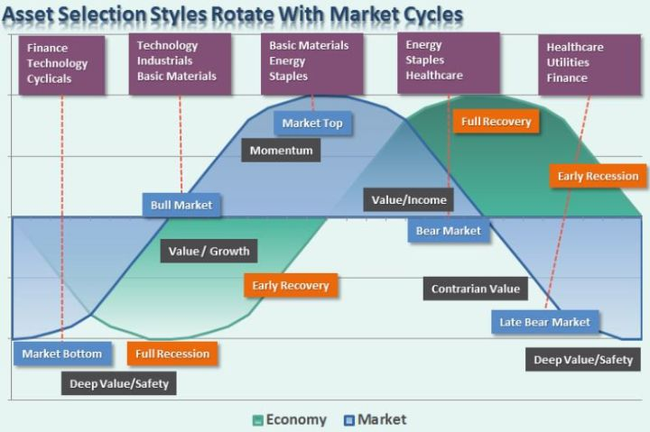
Kuvassa ei ole tarkkaa aikajanaa. Kyseessä on myös teoreettinen malli kauniine s-kurvineen. Todellisuuden ei tarvitse mennä kuten kuvassa. Kuvan havainnollistavana pointtina on lähinnä se, miten rotaatio eri sektoreiden ja tyylilajien kesken on noin periaatteessa mennyt talouden ja markkinan syklien vaiheissa.
Ollaanko nyt siinä vaiheessa, jossa basic resources, energia ja value yleisesti ovat ottamassa vetovuoroa teknologia- ja momentumosakkeilta? Defensiivisemmät Healthcare ja kestokulutushyödykkeet (staples) ovat jo olleet hyvä vedossa. Näin on käynyt talouden nousukauden viimeisissä vaiheissa, kun osakemarkkinat samalla ovat pikkuhiljaa alkaneet taipumaan (niin ei tarvitse käydä).
USA:n ja Kiinan väliseen kauppasotaan pitäisi saada jonkinasteinen sopimus tammikuun 15. päivä. Jos yllättävää takapakkia ei saada, luulisi sovun tuovan helpotusta yritysten omien tuotantosuunnitelmien näkymiin ja kannustaa jälleen tekemään investointipäätöksiä. Juuri epävarmuus kauppasodan kestosta ja vaikutuksista on hidastanut osaltaan talouskasvua. Sopu poistaisi epävarmuutta, jolloin talouskasvu voi saada sykäyksen ylöspäin.
Pelkkä odotus Euroopassa viriävästä fiskaalielvytyksestä voi alkaa nostamaan talouden luottamusta ja markkinoiden inflaatio-odotuksia. Yleisemmin tarjolla oleva aikaisempia odotuksia korkeampi kasvu tarkoittaisi sitä, että sijoittajien ei tarvitsisi enää maksaa korkeita kertoimia harvinaisesta kasvusta (kuten kalliit kasvuosakkeet). Tarjolle löytyisi myös halvempi vaihtoehto: arvo-osakkeet.
Kasvuosakkeissa lupaus kassavirroista on usein pidemmällä tulevaisuudessa. Laskevien korkojen tukemina sijoittajat ovat voineet diskontata kasvuosakkeiden kassavirtoja yhä pidemmältä nykyhetkeen, ja saaneet silti houkuttelevia nettonykyarvoja.
Duraatio toimii myös toiseen suuntaan. Skenaariossa, jossa korot nousisivat, matemaattisesti lähempänä nykyhetkeä olevat kassavirrat nousevat suhteessa arvokkaammiksi. Kaiken järjen mukaan kasvuosakkeiden korkeat arvostustasot olisivat tuolloin herkästi tulossa alas.
Eli jos korot nousisivat, saisivat arvo-osakkeet myös sitä kautta suhteellista tukea. Jotain pitää omistaa ja arvo-osakkeet – joissa usein, toisin kuin kasvuyhtiössä, on tukemassa myös tuottokomponentti osingon muodossa – nousisivat esiin suhteellisen houkuttelevina.
Osakkeissa on myös näennäinen inflaatiosuoja suhteessa bondeihin. Nousevien korkojen myötä raha bondeista voi uida osakkeisiin, tukien niitä yleisesti. Näin voisi jatkua, kunnes bondien korot olisivat jälleen houkuttelevat suhteessa inflaatioon ja osakkeisiin.
Pelikirja vuodelle 2020
- Alkuvuodesta markkina yliostettu; samoin sentimentti positiivinen.
- Vahvuudesta kertoo, ettei edes Iran-kuvio saanut markkinoita alas --> Korjaavatko yliostetut tasot ajan vai hinnan kautta? --> Mahdollinen korjaus lisäyksen paikka?
- Base case: alkuvuosi kohti loppukevättä vielä suotuisa kasvuodotusten ja kauppasodan helpotettua.
- Loppukeväästä USA:n vaalit ja kenties Kiina-neuvottelut nostanevat päätään epävarmuuksina?
- Maailman kasvun ja kauppasotahuolien helpottaessa USD heikentyy?
- Alkuvuodesta korot jatkavat nousuaan ja inflaatio-odotukset nostavat päätään?
- Arvo-osakkeet ja sykliset, kuten raaka-aineliitännäiset yhtiöt sekä pankit ottavat muuta markkinaa kiinni?
- Tuotto-odotus: EM > Eurooppa > USA
- Suojaukset: Kulta/Hopea, S&P500-short + yritetään roikkua edes jotenkin mukana järkevästi hinnoitelluissa kasvu- ja momentum-osakkeissa
Kuten mainittua, olimme Kaliforniassa lomareissulla. Jälkeenpäin keskustelin makrosalkunhoitajana työskentelevän ystäväni kanssa siitä, kuinka tyyristä siellä oli. Toki Kalifornia on vauras osavaltio, mutta kommenttini sai ystäväni kysymään minulta, että olenko katsonut missä ostovoimapariteetilla (PPP) painotettu EURUSD-valuuttakurssi on? En ollut.
Perustuen OECD:n laskelmaan PPP:sta, on dollari reilu 20% yliarvostettu suhteessa euroon. Jotta ostovoimat olisivat lähempänä pariteettia, tulisi eurotaalan olla lähempänä 1.40 kuin 1.11.
Ajatus siis on, että ero korjaantuisi, jos yhdysvaltalaiset ostaisivat ”arvokkaammilla” dollareilla edukkaampia euromääräisiä tavaroita. Ero voi selittyä palveluilla, jotka eritoten ovat USA:ssa tyyriitä, joten johtopäätösten tekeminen ei ole mutkatonta. PPP-painotettu valuuttakurssi on myös saattanut olla pitkäänkin eri kuin ”markkinahinta”.
Pitkässä juoksussa PPP on kuitenkin toiminut jonkinlaisena suunnan näyttäjänä myös vallitsevalle valuuttakurssille. Siksi arvio puoltaa osaltaan sitä, että USD voisi olla fundamentaalisti yliarvostettu.
Miten tähän on tultu? Globaalisti USA:n korot ovat olleet suhteellisen ”korkeat”, joten taalamääräisistä varallisuusluokista on saanut positiivista carrya. Ulkomainen sijoittaja on voinut perustellusti jättää valuuttariskin suojaamatta. Samalla tuo carry on pitänyt myös shorttaajat loitommalla, sillä se on heille suora kustannus.
Kauppasota toi maailmaan epävarmuutta, joka ruokki turvasatamakysyntää. Tilanne oli jokseenkin poikkeuksellinen: maailman kaikista eri vaihtoehdoista se yksi turvallisimmista tarjosi myös harvinaista positiivista carrya.
Mikä olisi se katalysti, joka saisi kuvion purkaantumaan? Kenties se, jos muu maailma saa kasvusysäyksen nyt, jos ja kun kauppasota helpottuu. Entä vaaliepävarmuus? Kenties ihan vain hinta. Jos esim. eurotaala lähtee hiipimään enemmän ylös, voi jossain vaiheessa kehityksestä tulla itseään ruokkivat ilmiö, jos USD-määräisiä suojauksia aletaan kiireen vilkkaan laittamaan päälle.
Nyt ollaan haastavilla vesillä, sillä makrotalouden kiemurat ovat tunnetun vaikeita ennustaa. On mahdotonta sanoa, minkä talouden raja-arvon ylitys vaikuttaa mihin ja miten. Voi olla, että tilanne jatkuu pitkäänkin tällaisena.
Occamin partaveitsen periaatteen mukaan useista selitysvaihtoehdoista tulisi valita se yksinkertaisin. Sinällään esitetty teoria käy järkeen. Katseet siis myös dollarissa, sillä se voisi avittaa useita edellä mainitsemiamme teesejä.
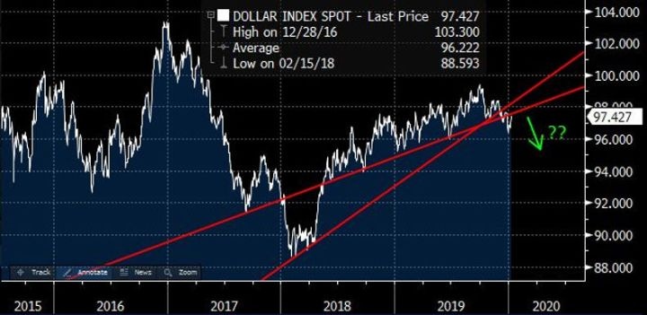
Kehittyvät taloudet ovat painottuneet syklisille aloille, kuten teollisuus, raaka-aineet ja pankit. Heikentyvä dollari vahvistaa heidän valuuttojaan ja nostaa sikäläistä korkotasoa houkutellen pääomia. Heidän ulkomaiset velkansa ovat yleensä taalamääräisiä, joten heikentyvä taala helpottaa rahoitusmenoja ja antaa tilaa investoinneille. Muutoinkin tuotto-odotus on houkuttelevampi kuin muualla maailmassa.
Jos oheista kuvaa katsoo silmät oikein siristäen, voi nähdä EM:n hieman jo nostavan päätään suhteessa muuhun maailmaan.
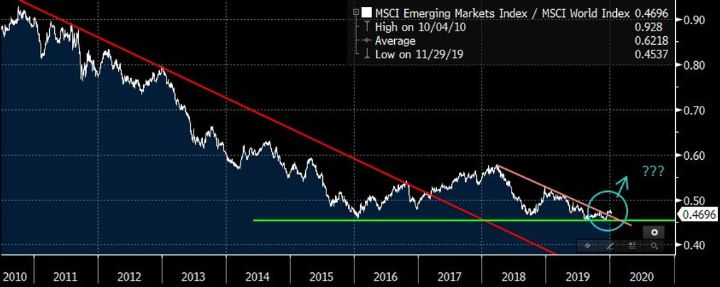
Euroopan osakkeet ovat olleet pitkään kroonisessa alipainossa globaalien sijoittajien keskuudessa. Eurooppa ei varsinaisesti ole ollut houkuttelevin sijoituskohde sieltä uupuessa mm. isot globaalit teknologiayhtiöt. Se kuitenkin on ollut tiedossa jo pitkään ja osittain siksi Eurooppa onkin laahannut perässä. Yksi riippakivi on ollut myös Brexit-epävarmuudesta nyt uudelleen ponnistava UK.
Euroopan uudesta tulemisesta voisi kieliä STOXX600-indeksi. Se tekee juuri paraikaa jotain sellaista, mitä se ei ole tehnyt sitten vuoden 2000-huippujen: uusia all time high -tasoja. Siinä, missä USA:n S&P500-indeksi karisti vuosien 2000 ja 2007 huiput jo 2012/13, on STOXX600 päässyt vasta nyt vastaavien edellisten huippujensa päälle.
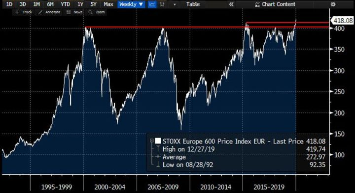
STOXX600-indeksin breakout antaa selvän tason, jota vastaan ostaa. Niin kauan kuin ollaan aikaisempien tasojen päällä, on vähemmän vastuksen tie ylöspäin.
Kuten nähtiin syklin loppuvaiheilla raaka-aineissa on ollut nousupainetta. Heikentyvä dollari voi auttaa tätä kehitystä, sillä raaka-aineet hinnoitellaan taaloissa. Raaka-aineet ovat lähtökohtaisesti varsin alhaalla sekä itsessään että suhteessa osakemarkkinoihin (ks kuva). Kuvasta myös nähdään, kuinka raaka-aineilla on ollut tapana nousta pari vuotta ennen taantumaa ja markkinoiden huippua (kuten 1973-74, 1988-90, 1998-2002, 2007-08).
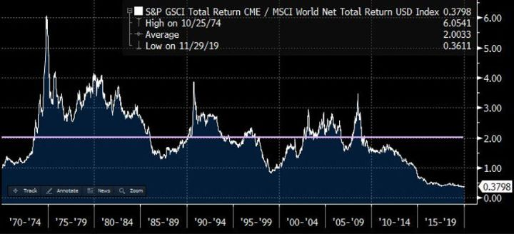
Jos yleiseen hyödykeindeksiin (S&P GSCI) zoomataan lähemmäs, voi orastavaa heräilyä olla havaittavissa.
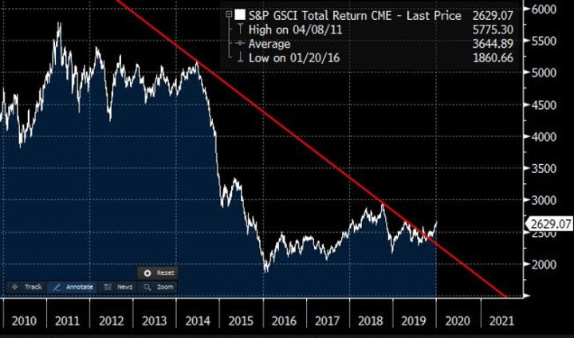
Sijoittajan pitää päättää, haluaako tätä peliä pelata. Kentällä on annetut säännöt, ja kuten on nähty, niitä voidaan myös lennosta muuttaa. Pakko ei ole pelata. Voi myös istua vaihtopenkillä ja pureskella mailan tuppia. Se ei kuitenkaan auta, että taistelee Don Quijotena sen puolesta, miten asioiden pitäisi olla.
Arvo, kasvu, momentum. Small cap, large cap. Makro. Long, short. Yritämme pitää mielen virkeänä ja pelata niitä paikkoja, joissa näemme keskivertoa paremman sauman onnistua.
Salkku tammikuussa 2020
Olemme pyrkineet rakentamaan salkun sellaiseen asentoon, joka heijastaa edellä mainittua näkemystänne mahdollisimman hyvin. Kertokoon seuraava kuva enemmän kuin tuhat sanaa:
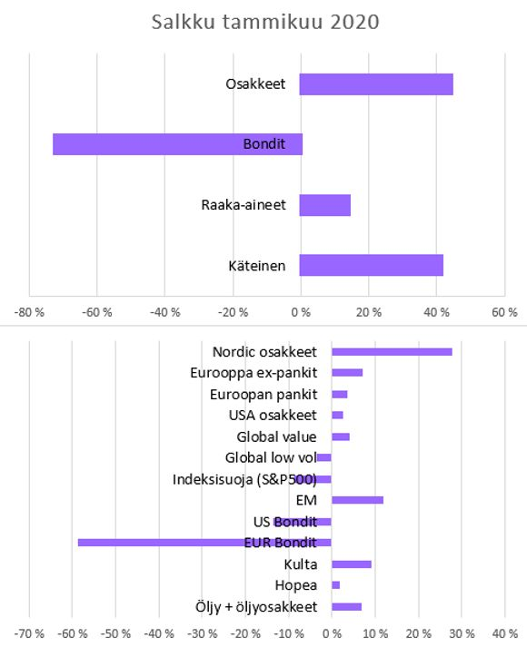
Tämä kirjoitus on pyrkinyt kuvailemaan isomman kuvan näkemystämme. Uusista yksittäisistä osakesijoituksista tulemme toivon mukaan kirjoittamaan lähiaikoina lisää.
Blogi
Uskomme ikuiseen oppimiseen ja tiedon jakamiseen. Olemme kirjoitelleet ajatuksiamme ylös blogillemme osaltaan kirkastaaksemme omaa ajatteluamme, mutta myös jakaaksemme niitä markkinoista ja sijoittamisesta kiinnostuneiden kanssa.
Kirjoittelusta onkin tullut ihan mukavasti positiivista palautetta, joten pyrimme jatkamaan samaa rataa. Otamme mielellämme parannusehdotuksia vastaan! Meihin voi olla yhteydessä nettisivujemme kautta tai sitten suoraan Twitterissä.
Viime vuoden aikana olemme tuottaneet ”Viikon kuumien linkkien” lisäksi seuraavat tekstit:
Strategiasta:
- Q3:n jälkiviisastelut
- Kun peli ei kulje
- Q2:n jälkiviisastelut
- Q1:n jälkiviisastelut
- Miten me sijoitamme?
- Aika olla taas hieman varovaisempi markkinoilla
Markkinoista ja sijoittamisesta yleisesti:
- Ajaako EKP Euroopan kriisiin?
- Millenniaalit eivät osta sijoitustuotteita pukumiehiltä
- Enkelisijoittamisen taivas ja helvetti
- Niin kauan kuin musiikki soi
- Onko aktiivinen salkunhoito menneen talven lumia?
- Ymmärrä tarinoita, ymmärrä markkinoita
- Elämän ja kuoleman markkinat
- Asiantuntijan mielipide
- Miksi me kirjoitamme blogia?
Osakkeista tarkemmin:
- Swedish Match – nuuskasta tuottoa?
- Lehto – pörssin kolera, syöpä ja rutto samassa paketissa
- Osakepoimintoja tilinpäätöskaudelta
- Ovatko huhut kivijalkakaupan kuolemasta liioiteltuja?
Disclaimer:
Kolumnit sisältävät mielipiteitä ja mahdollisesti tietoa omista sijoituksistamme, jotka voivat vaihdella päivästä toiseen. Mitään, mitä kirjoitamme ei tule ottaa sijoitussuosituksena. Kuten teksteissämme painotamme, päätökset kannattaa aina tehdä itse. Lukija vastaa itse voitoistaan ja tappioistaan.